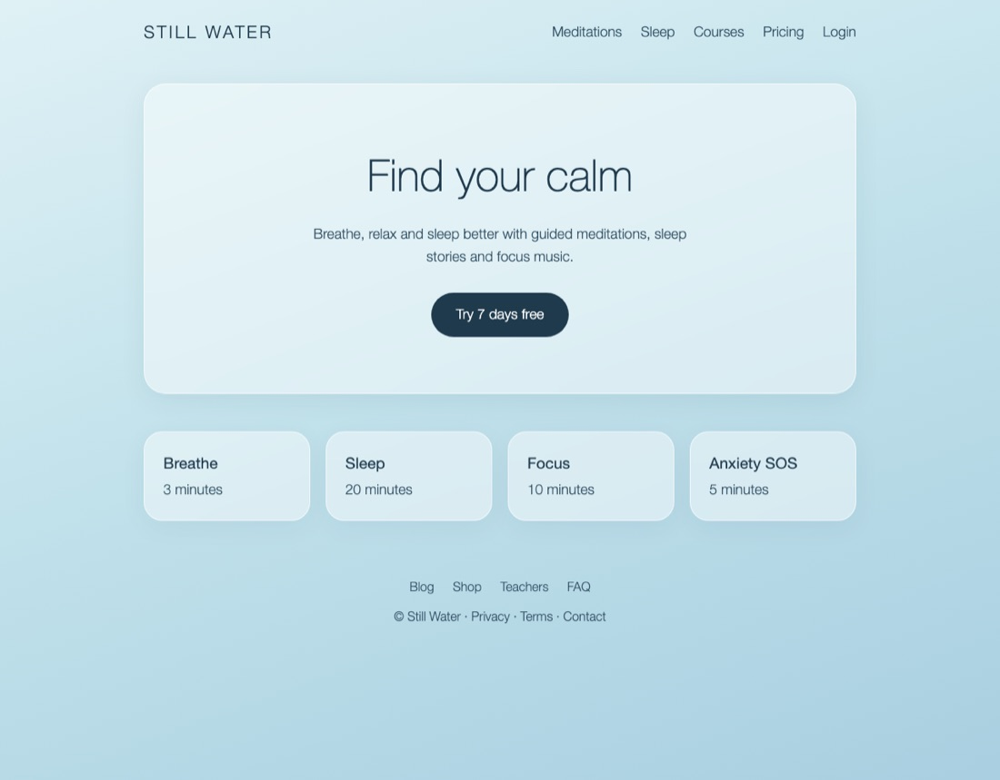
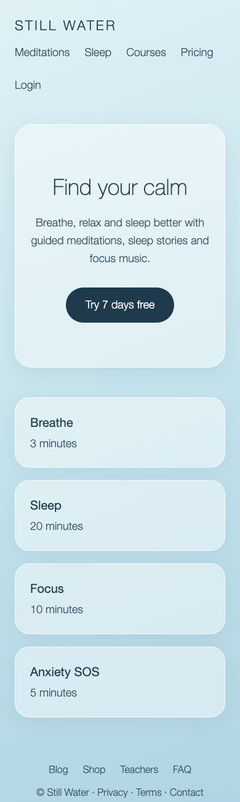

Codex and Claude work on the same project by passing a written hand-off note, like a relay baton. Neither has to start from scratch.
Codex ⇄ Claude relay
When one helper uses up its plan's allowance, the other reads the note and picks up exactly where it stopped. No re-explaining.
Does the job and keeps the note up to date
The relay spots the limit message
Carries on from where Codex stopped
Codex ⇄ Claude relay · backup mode
The checker looks at the work on its own before it reads the other one's report, so it forms its own opinion instead of just agreeing.
at the work itself, report hidden
and must explain any change of mind
with what to fix
Codex ⇄ Claude relay · make and check mode
No guessing about your taste or your business. You get a short question with a suggestion, and your answer is final.
Is this round only about how the page looks, or should visitors be able to start a meditation?
Codex ⇄ Claude relay · questions come to you, in the terminal or as clickable choices in Claude
After every round it takes pictures at computer and phone size, and the checker judges what people will actually see.


Codex ⇄ Claude relay · screenshots for visual work
We gave a checker unfinished design work with a report that said "nothing left to ask". Same work, seven reviews.
Looked at the work first5 reviews
Read the report first2 reviews
Codex ⇄ Claude relay · small test: signs, not proof. That's why looking first is on by default.
You need both apps, signed in with your normal plans. No paid API keys.
Codex (sign in with ChatGPT) and Claude Code (sign in with Claude).
Download one file, then run relay.py init. It asks what the project is and what "good" looks like to you.
relay.py run --task "…"
Or just ask Claude to run it for you.
Codex ⇄ Claude relay